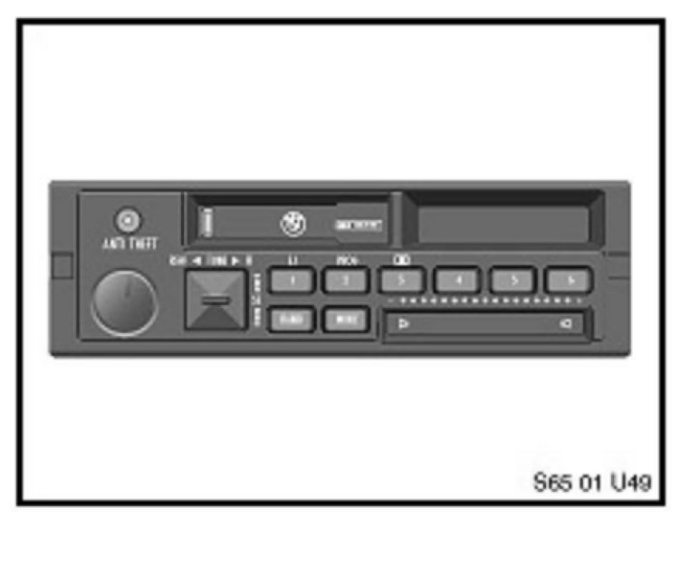
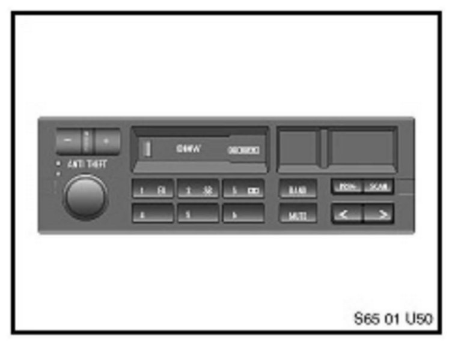
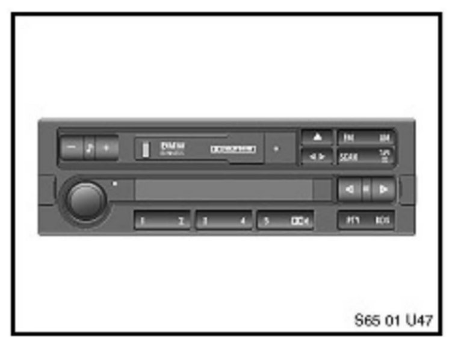
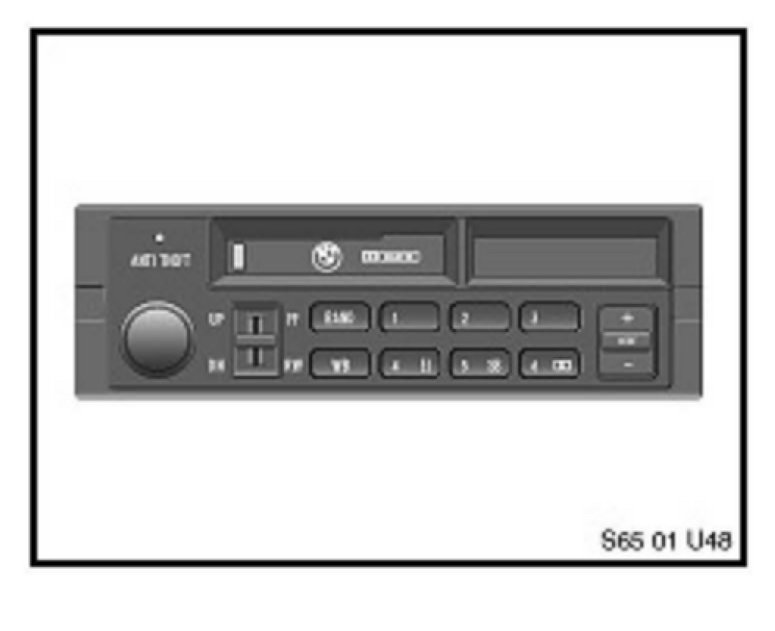
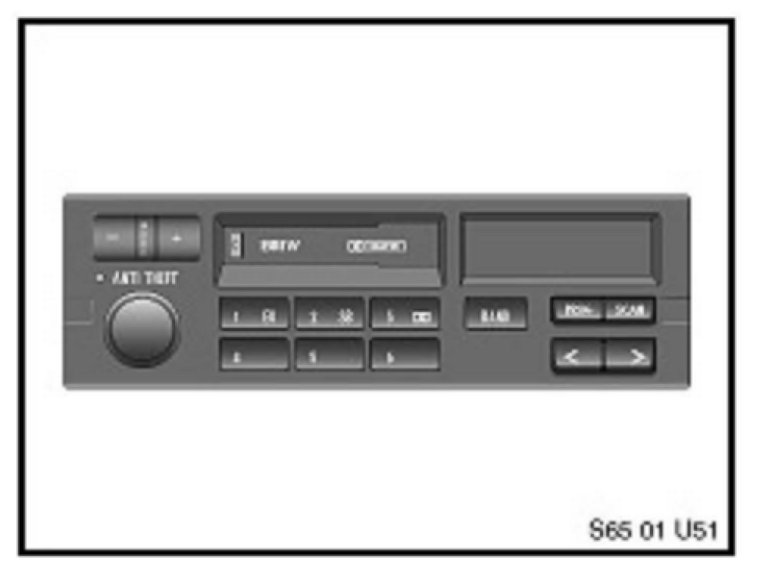
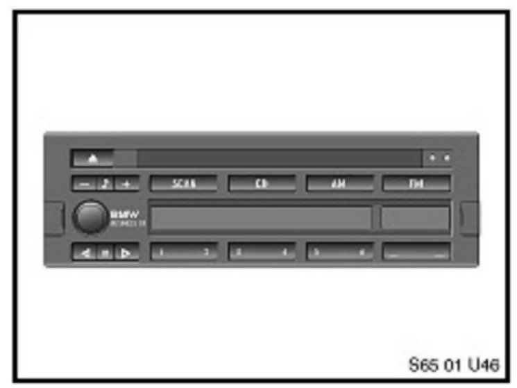
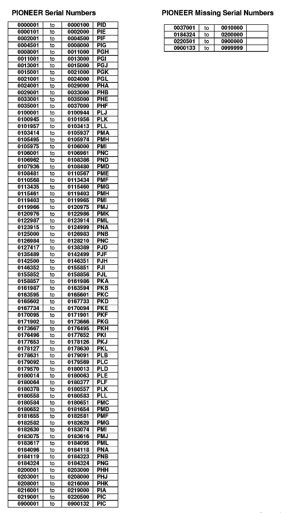

Audio System - Retrieving Radio Security Codes
SI B 65 05 99Sound Systems, Cruise, Alarms, Monitors
February 2008
Technical Service
This Service Information Bulletin supersedes S.I. 65 05 99 dated January 2008.
[NEW] designates changes to this revision
SUBJECT
Radio Security Codes in DCS
MODEL
All with anti-theft radio
SITUATION
Procedure to obtain Radio security codes via DCS
PROCEDURE
In order to obtain the correct radio security code:
1. If possible, ask the customer where the "radio security code" card is located, (normally with the Owner's Manual). It is recommended that the BMW Center keep the radio codes on file.
2. In some situations the "radio security code" card cannot be located. In order to avoid unnecessary delays in obtaining the correct radio security code, the radio code can be found using DCS, for radios manufactured by Alpine, Pioneer and Blaupunkt.
BMW uses several different manufacturers of radios. The most common are: Alpine, Pioneer and Blaupunkt. On earlier production vehicles the following radio brands can be found: Bavaria, Becker and Phillips. The manufacturers name is always printed on the radio label for easy identification (label is located on top of the radio chassis). Most radio codes for Alpine, Pioneer and Blaupunkt are available via DCS. Each radio manufacturer has a different method of obtaining their security code. Use the following as a guideline when retrieving the proper serial numbers and entering into DCS to obtain the radio code.
Alpine Non I-Bus Radio- (E30, E34, E36 vehicles)

Alpine radios use two types of serial numbers. The radio serial number will contain either nine or ten characters. For either type of serial number enter all characters into DCS.
Example: S/N A50223456
Enter: A50223456
Example: S/N A50223456a
Enter: A50223456a

IMPORTANT: If the serial number begins with
A501.... When entering into DCS change the first
letter to B.
Example: S/N A50123456
Enter: B501 23456
Alpine I-Bus Radio - (E36 from 96MY)
With the introduction of I-Bus technology (from 1996
production), radio serial numbers can be displayed in
the radio matrix by using the radio Service Function:
^ Turn the radio OFF and ON again
^ Press and hold the "m" button for 5 seconds
^ A number will display in the radio matrix

^ Example: SNT0123456 or W0123456
^ Turn radio OFF to exit Service Function
^ Enter into DCS the last eight characters to obtain the code. Enter: T0123456 or W0123456
If the radio serial number cannot be displayed using the Service Function, remove the radio and obtain the serial number from the radio chassis. Alpine I-Bus serial numbers contain fourteen or fifteen characters. If the serial number contains 15 characters, drop the last letter and use the last eight characters and enter into DCS.
Example: S/N AL6BDUT0123456a
Enter: T0123456 into DCS
If the serial number contains 14 characters use the last eight remaining characters and enter into DCS.
Example: S/N AL6BDUT0123456
Enter: T0123456
If the ALPINE anti-theft code is not found in DCS, ALPINE has created a website to obtain these radio codes. Log on to the ALPINE website.
The ALPINE Anti-Theft code will then be displayed immediately.
[NEW] Important: Do not change the Password since this deactivates the access for all other users!
Pioneer Radio - (E30, E31, E32)

Pioneer radio serial numbers contain ten characters. The first three characters are always letters, followed by seven digits. To obtain a radio code through DCS, enter the full serial number.
Example: S/N POL0123456
Enter: POL0123456
Pioneer Radio- (E34, E36)

Pioneer radio serial numbers contain ten characters. The first three characters are always letters, followed by seven digits. To obtain radio code through DCS, enter the full serial number.
Example: S/N POL0123456
Enter: POL01234562345
If the first letters are missing or if the radio code obtained through DCS is invalid, an alternate method must be used. The first three letters of the serial number must be changed. Example: If the serial number is between 0000001 to 0000100, enter "pid" in front of the serial number.
Blaupunkt Radio- (CD43 used in E36/7)
Blaupunkt radio codes are now available in DCS. The radio serial numbers can be pulled up in the radio matrix by using the radio Service Function:
^ Turn the radio OFF and ON again
^ Press and hold the "m" button for 5 seconds
^ A number will appear in the matrix
^ Example: W1478822
^ Turn radio OFF to deactivate Service Function
^ Enter all eight characters into DCS to obtain a radio code.

If the radio serial number cannot be displayed by using the Service Function, remove the radio to obtain the serial number from the label. Blaupunkt radios have serial numbers containing fourteen characters. Enter the last eight characters into DCS.
Example: S/N BP8272W1483692
Enter: W1483692
There are some instances where the serial number displayed in the radio matrix displays all numbers. The first number is usually a 1. If this is the case you need to replace the 1 with either a Y or Z when entering into DCS.
Example: S/N BP027319661001
Enter: Y9661001 or Z9661001
PHILLIPS- radio codes are only available via PuMA (submitting a PuMA case). Example: PH7850S1083150. The complete serial number is required.
BAVARIA- radio codes are only available through via PuMA (submitting a PuMA case).
Example: PI92XXC0012345. The complete serial number is required.
BECKER- radio codes are only available via PuMA (submitting a PuMA case). Example: BE0729X570438. The complete serial number is required.
Please note: Three unsuccessful attempts to enter the code will result in the radio being disabled for an hour. If the radio is disabled, the key must be left in KLR and the radio must be switched on for an hour. For those radio codes that are not found in DCS, please submit a PuMA case including the radio serial number and manufacturer. Refer to SI B00 01 03 for information on how to use PuMA.
WARRANTY INFORMATION
For Information only.
ATTACHMENTS
��H<:

view PDF attachment B650599Attachment_A.

Disclaimer